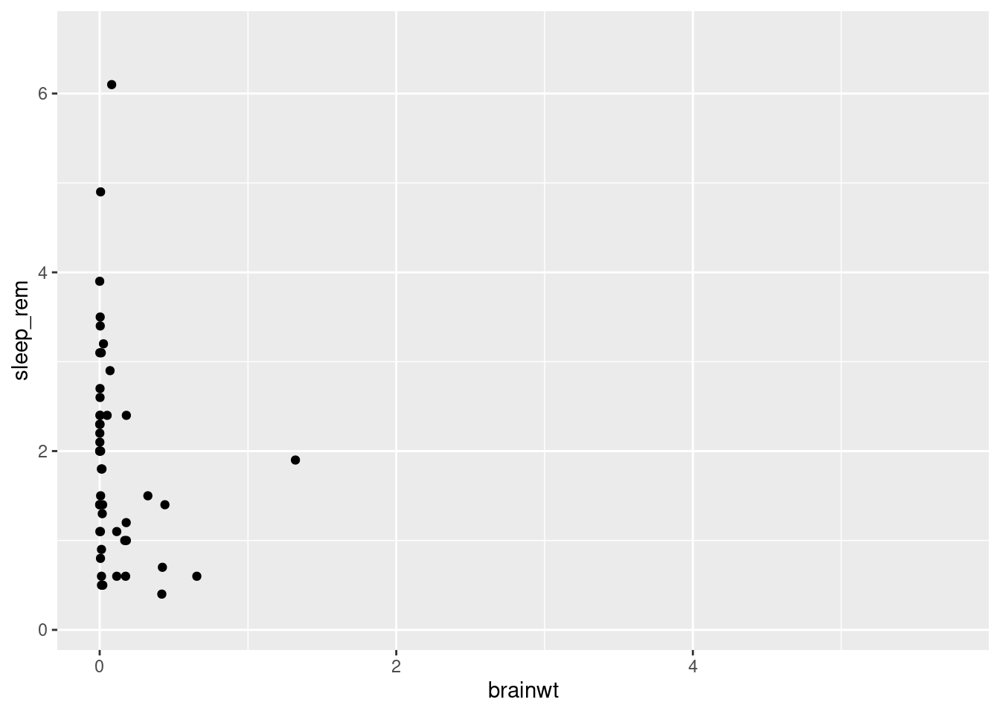
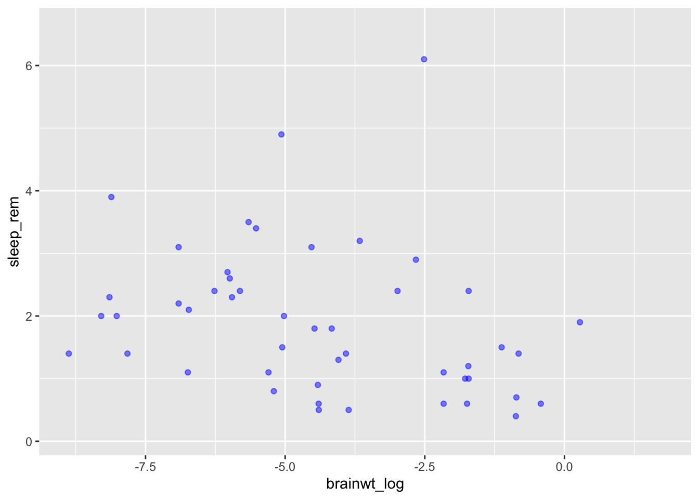
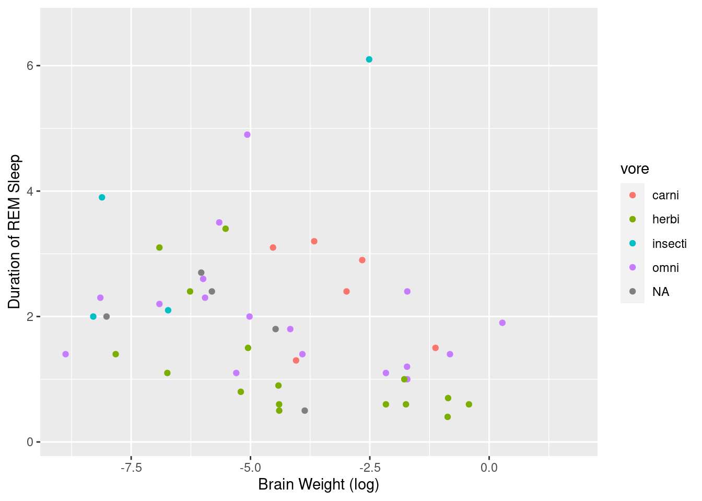
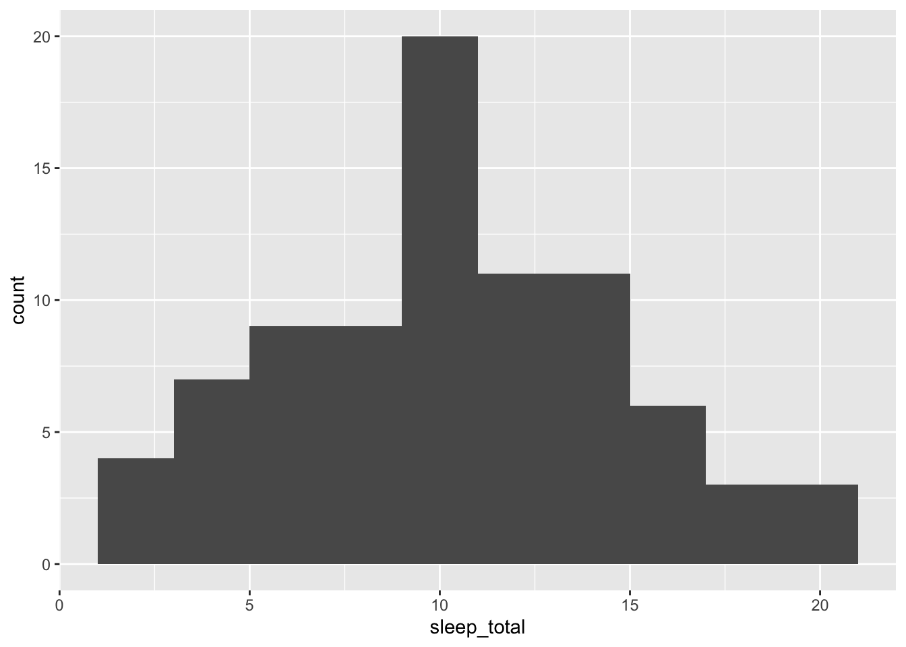
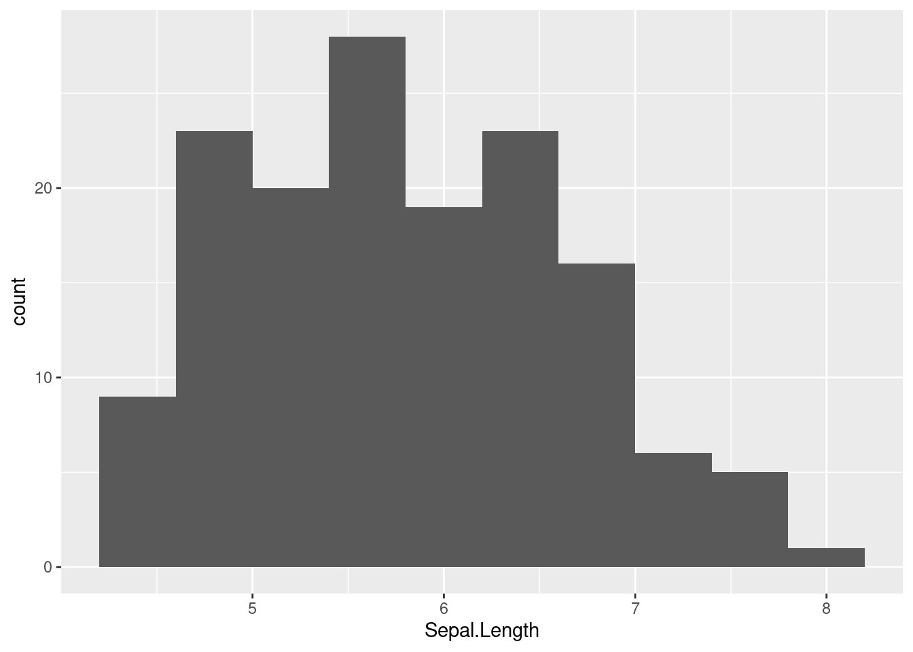
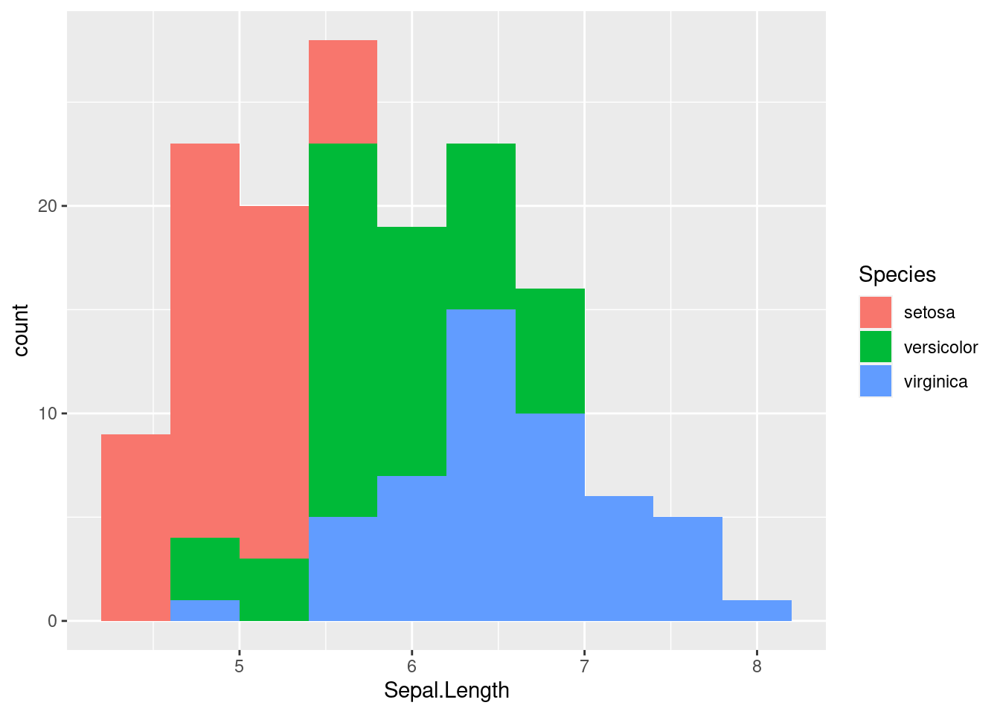
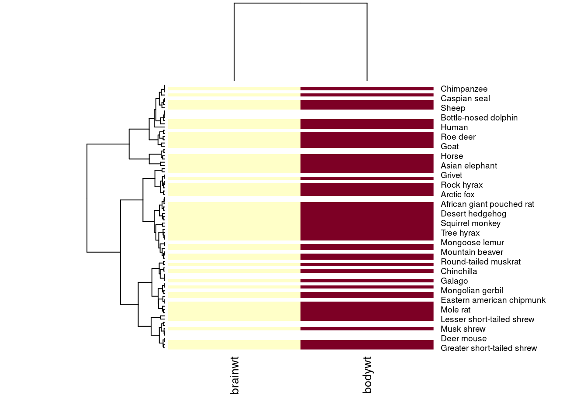
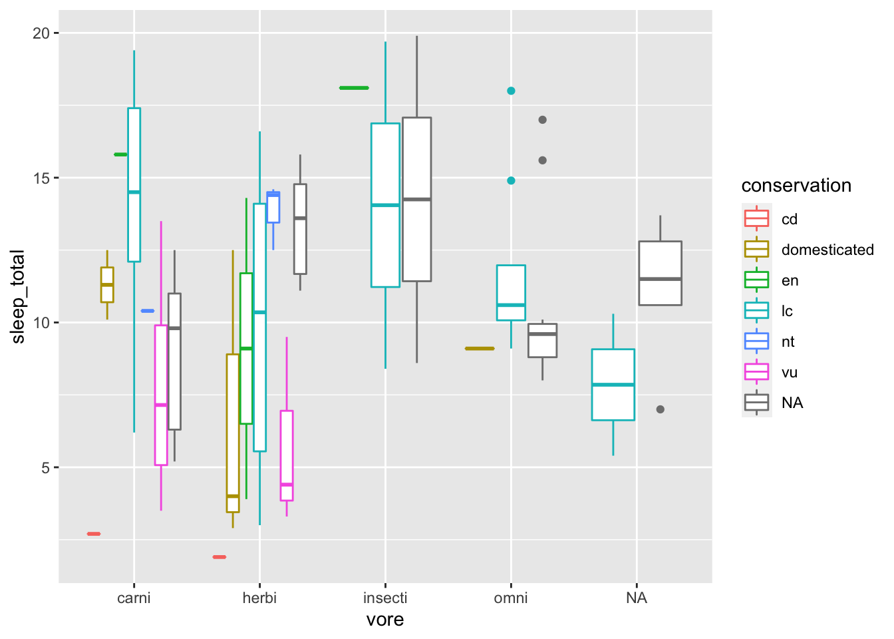
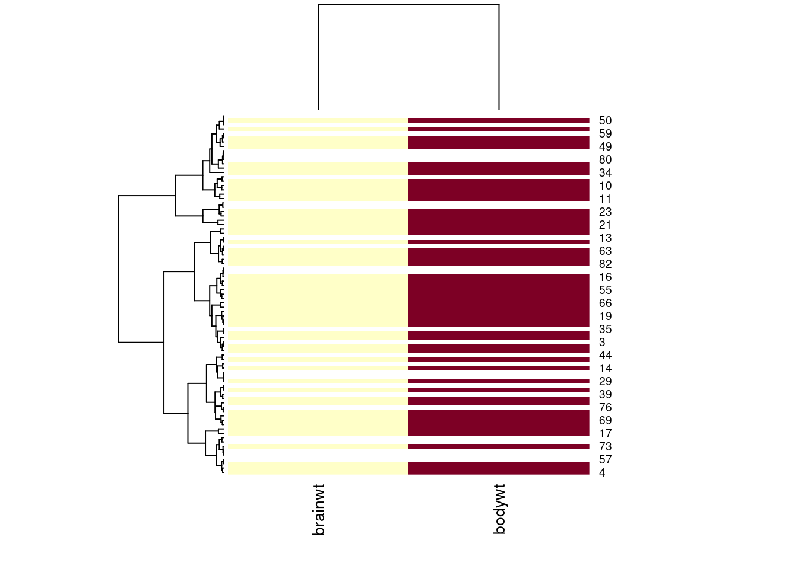
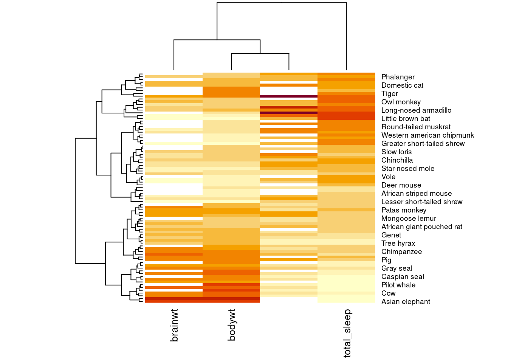

3.4 Making plots with ggplot2
We will primarily be working in ggplot2 as it has the greatest degree of customization for visualization and offers many additional features over the basic plotting in R.
3.4.1 Getting started with a ggplot
Most ggplot calls to create a figure take the following form (you can read more using help(ggplot)):
ggplot(data = <DATA>, mapping = aes(<MAPPINGS>)) + <GEOM_FUNCTION>()
We will practice using our mammalian sleep dataset. You can look up more info about this dataset using the help function and the dataset name, msleep.
## # A tibble: 6 x 11
## name genus vore order conservation sleep_total sleep_rem sleep_cycle awake
## <chr> <chr> <chr> <chr> <chr> <dbl> <dbl> <dbl> <dbl>
## 1 Chee… Acin… carni Carn… lc 12.1 NA NA 11.9
## 2 Owl … Aotus omni Prim… <NA> 17 1.8 NA 7
## 3 Moun… Aplo… herbi Rode… nt 14.4 2.4 NA 9.6
## 4 Grea… Blar… omni Sori… lc 14.9 2.3 0.133 9.1
## 5 Cow Bos herbi Arti… domesticated 4 0.7 0.667 20
## 6 Thre… Brad… herbi Pilo… <NA> 14.4 2.2 0.767 9.6
## # … with 2 more variables: brainwt <dbl>, bodywt <dbl>You will first use the ggplot() function and bind the plot to a specific data frame using the data argument.
ggplot(data = msleep)
You will next need to define a mapping (using the aesthetic or aes function), by selecting the variables to be plotted and specifying how to present them in the graph, e.g. as x/y positions or characteristics such as size, shape, color, etc.
ggplot(data = msleep, aes(x = brainwt, y = sleep_rem))
You can then add ‘geoms’ – graphical representations of the data in the plot (points, lines, bars). ggplot2 offers many different geoms. We will use some common ones today including:
geom_point()for scatter plots, dot plots, etc.geom_boxplot()for, well, boxplots!geom_line()for trend lines, time series, etc.
To add a geom to the plot use the + operator. Because we have two continuous variables, let’s use geom_point() first:
ggplot(data = msleep, aes(x = brainwt, y = sleep_rem)) + geom_point()
To save your work-in-progress, you can assign the plot to a variable.
We can now draw the plot as a scatterplot with points to represent each state.
## Warning: Removed 35 rows containing missing values (geom_point).
You might notice that all of the points are squished against the y-axis since many of the mammals in this dataset have low brain weights. You can see this if you plot a very simple histogram of brainwt to see its distribution, or if you get summary statistics.

## Min. 1st Qu. Median Mean 3rd Qu. Max. NA's
## 0.00014 0.00290 0.01240 0.28158 0.12550 5.71200 27As you can see, the minimum and median values are very low, but there are a few mammals with high brainwt as you can see by the much larger maximum value in this vector.
To make more useful plots, we can transform this value using log-scaling. While we will have to note that the new values do not exactly match the real-world measurements anymore, patterns we see (i.e. something that correlates with higher brain weights) will still hold true.
msleep2 <- msleep %>% mutate(brainwt_log = log(brainwt))
ggplot(msleep2, aes(x = brainwt_log, y = sleep_rem)) + geom_point()## Warning: Removed 35 rows containing missing values (geom_point).
Here we use the mutate function to make a new variable called brainwt_log in our dataset (technically a new dataset copy that we have saved as msleep2). Plotting this variable as our x variable (i.e. independent variable), makes it easier to look for patterns.
3.4.2 Changing plot aesthetics
???
We can modify the appearance of the plot by changing aspects of the points we plot such as transparency (“alpha”) and color.
ggplot(data = msleep2, aes(x = brainwt_log, y = sleep_rem)) +
geom_point(alpha = 0.5, color = "blue")## Warning: Removed 35 rows containing missing values (geom_point).
It is also possible to scale the color of the points by some variable present in the data.
## Warning: Removed 35 rows containing missing values (geom_point).
When generating visualizations, it is important to annotate the figure with meaningful labels on the axes to make them accessible for the viewer.
ggplot(msleep2, aes(x = brainwt_log, y = sleep_rem, color = vore)) +
geom_point() +
labs(x = "Brain Weight (log)",
y = "Duration of REM Sleep")## Warning: Removed 35 rows containing missing values (geom_point).
3.4.3 Exploring other plots
Let’s consider how we make other plots besides a scatterplot.
Scatterplots are a great way to look at two quantitative (numerical) values at the same time to observe patterns (i.e. correlations) between the variables or to identify interesting outliers.
However, other plots may be more useful to look at differing numbers of variables (i.e. one quantitative variable) or different types of variables (i.e. qualitative or categorical data).
We can create histograms in ggplot2 that are more aesthetically pleasing than the default hist function. This shows the distribution of one quantitative variable.


3.4.4 Using categorical data
We can look at how many individuals in the dataset fall into each category, such as feeding behavior.

We can look at how many total sleep distribution is distributed within each category of feeding behavior using separate box plots.


3.4.5 Visualizing between groups
By adding a different parameter to fill in the aes we define throgh the ggplot function, we can separate out histograms according to different groupings such as here where we look at how total sleep distribution is distributed according to feeding behavior.


We can even drill down further and separate out another category, so that we can look at each feeding behavior and each conservation status (e.g. how the total sleep duration of domesticated herbivores compares to least concern carnivores).

3.4.6 Generating heatmaps
Why no heatmaps?
The built-in heatmap function meets many needs while the ggplot2 equivalent (geom_tile) can be confusing. We don’t recommend ggplot2 for heatmaps.
## [,1] [,2]
## [1,] NA 3.9120230
## [2,] -4.1669153 -0.7339692
## [3,] NA 0.3001046
## [4,] -8.1456296 -3.9633163
## [5,] -0.8603831 6.3969297
## [6,] NA 1.3480731
heatmap(temp.data, scale = "col", labRow = msleep$name, labCol = c("brainwt", "bodywt"), cexCol = 1)
temp.data2 <- cbind(temp.data, msleep$sleep_total, msleep$sleep_rem)
heatmap(temp.data2, scale = "col", labRow = msleep$name,
labCol = c("brainwt", "bodywt", "total_sleep"), cexCol = 1)
Licensed Creative Commons Attribution-NonCommercial-ShareAlike 4.0